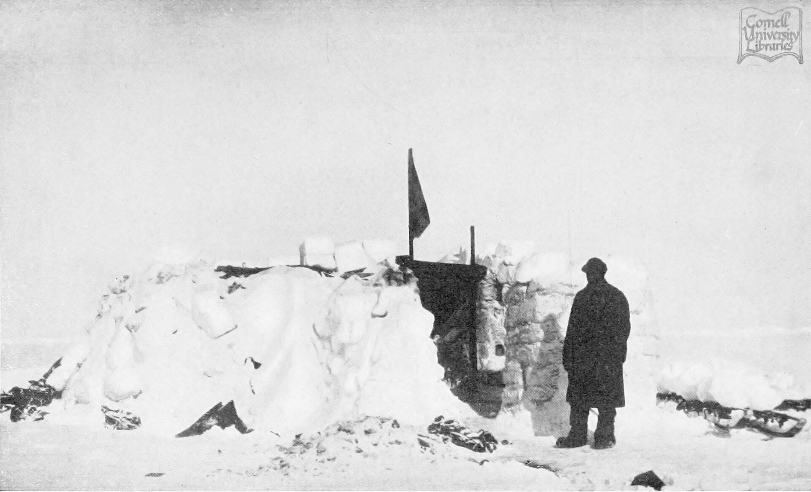

Chapter 11
Patience Camp on the Drift
The three boats sat on their sledge runners at the edge of the floe, hulls burned and caulked, mast steps reinforced, decks partially covered in canvas: the James Caird, the Dudley Docker, and the Stancomb Wills. Men passed them daily on the way to the blubber stove, and no one spoke of what they represented—that the ship was truly gone, that the ice might never release them toward land, that the boats might have to be launched into water that did not yet exist. The floe beneath them, some half-mile square, held twenty-eight men and their salvaged stores. They had named it Patience Camp. The name was both instruction and indictment.
On 29 December 1915, Thomas Orde-Lees wrote that the temperature stood at minus 18 degrees Fahrenheit. He recorded the fact without comment, as he had recorded it the day before and would record it the day following. The cold had become a kind of weather that no longer required elaboration. What required elaboration was the meat. Seal again, he noted, and penguin when they could get it, which was not often enough. The hunters had brought in a Weddell seal that morning, and the butchery had proceeded in the familiar way: the carcass dragged to the camp’s edge, the blubber stripped for fuel, the meat cut into strips and hung in the wind to freeze. The dogs watched from their lines, their own rations reduced now, their numbers diminished. The previous week, Shackleton had ordered the first team shot. Their meat had gone into the pot.
James Wordie, the geologist, kept his own tally. He noted the drift positions that Frank Worsley calculated each day from the noon sight, when the sun was high enough to permit a reading. They were moving, but slowly, and in the wrong direction.
The pack had carried them northwest for weeks, then stalled, then swung northeast, then stalled again. Wordie recorded the coordinates with the precision of a man who understood that the numbers meant something, even if that meaning remained obscure.
On 3 January 1916, the position was 69 degrees 42 minutes south, 51 degrees 28 minutes west. A week earlier, they had been slightly further south. The ice was not carrying them toward Paulet Island, the nearest point where stores might be found. It was carrying them parallel to the coast, or away from it entirely.
After being held at around 67° for several weeks, at the end of January there was a series of rapid north-eastward movements which, by 17 March, brought Patience Camp to the latitude of Paulet Island, but 60 nautical miles to its east.
The camp had settled into a routine that felt less like survival than like a suspended sentence. The tents—five of them, each housing five or six men—were arranged in a rough semicircle around the blubber stove, which burned day and night. The smoke was acrid and greasy, coating everything in a fine black film that no amount of scrubbing could remove. Hurley, the photographer, had long since stopped trying to keep his plates clean. He spent his days mending gear or talking with Clark, the biologist, about specimens they would never preserve. The scientific work had ceased to have meaning. There was no laboratory, no way to record observations except in notebooks that grew damp and warped. The expedition’s purpose—the crossing of the continent—had become a kind of joke, told in whispers when Shackleton was out of earshot.
Shackleton himself maintained the appearance of purpose. Each morning, he walked the perimeter of the floe, checking the condition of the ice, looking for cracks or pressure ridges that might threaten the camp. He spoke with Wild, his second-in-command, about the stores, about the dogs, about the state of the boats. He made a show of consulting Worsley on the drift, though both men knew that the navigator’s calculations were guesses at best. The sun had disappeared below the horizon on 2 May and would not return until late July. In the interim, they lived in a twilight world, the sky a dull gray at noon, the stars bright and cold at midnight. Shackleton’s presence was a kind of performance, and the men were his audience. They understood what he was doing, and they appreciated it, even as they recognized it as theater.
The theater extended to the smallest details. Meals were served at regular intervals: breakfast at 8 a. m., lunch at 1 p. m., dinner at 6 p. m. The portions were measured to the gram. Orde-Lees, placed in charge of stores, kept a meticulous ledger: so many ounces of seal meat per man per day, so many ounces of penguin, so many spoonfuls of powdered milk, so many lumps of sugar. The rations were monotonous, but predictable, and predictability was a form of comfort. The alternative—hunger without schedule—would have been harder to bear.
On 23 January, a lead opened to the northeast. Worsley calculated that it ran for perhaps two miles, wide enough to take the boats, pointing roughly toward the South Orkneys. Shackleton ordered the boats made ready. The men worked in silence, checking the lashings, loading the stores they had kept prepared for just this moment. The dogs were harnessed, the sledges brought forward. For six hours, they waited for the lead to widen, for the ice to stabilize, for the signal to launch. Then the lead began to close. The ice on either side ground together, the water between them turning to slush, then to solid ice. By evening, the lead was gone. The boats were unloaded, the stores returned to their places, the dogs returned to their lines. No one spoke of what had almost happened.
The disappointment was a physical thing, a weight in the chest, a tightness in the throat. Orde-Lees wrote that night of the lead closing at 6 p. m. They were still on the ice. He did not know how many more false alarms they could endure.
The group was not uniform. The twenty-eight men came from different backgrounds, different classes, different nations. There were the officers—Shackleton, Wild, Worsley, Hudson, Crean, and the others—who understood themselves as a cut above the seamen and stokers. There were the scientists—Wordie, Clark, Hussey, James, Macklin, and Orde-Lees—whose presence gave the expedition its nominal purpose, and who now found themselves without work. There were the sailors—How, Bakewell, McCarthy, McLeod, and the rest—whose skills were suddenly irrelevant, there being no ship to sail. And there were the stokers and firemen, the lowest of the low, who had shoveled coal in the engine room and now shoveled snow around the tents.
The social order established aboard the Endurance persisted on the ice. The officers ate together, or as together as separate tents allowed. The scientists kept to themselves, their conversations turning to topics the sailors found incomprehensible. The seamen formed their own groups, their own hierarchies, their own jokes. Shackleton moved among them all, speaking to each man in terms the man could understand, maintaining the fiction that they were all in this together. The fiction was necessary. Without it, the camp might have fractured into factions, and factions would have meant death.
But the fiction was not without strain. Orde-Lees, in particular, was a problem. As storekeeper, he controlled the distribution of food, and he took his responsibilities seriously—too seriously, in the view of some. He measured and weighed and counted with a precision that struck others as parsimonious. When a man asked for an extra portion, Orde-Lees would consult his ledger, calculate the remaining stores, and render a verdict. The verdict was usually no. The men grumbled. They called him the Baron behind his back, a reference to his supposed aristocratic airs. Orde-Lees knew what they called him, and he did not care. His job was to make the stores last, and he would do his job whether they liked it or not.
Shackleton intervened when the grumbling grew too loud. He understood that Orde-Lees was doing necessary work, and that the work made him unpopular. He also understood that unpopularity could fester, could turn to resentment, could turn to mutiny. So he kept an eye on the storekeeper, corrected him publicly when he seemed too rigid, defended him privately when the men complained. The balancing act was one of dozens that Shackleton performed each day, and it wore on him. The commander’s face grew thinner, his eyes more hollow. He was sleeping less, eating the same rations as the men, carrying the same weight of uncertainty.
The uncertainty was the hardest thing. In the early days after the ship’s loss, there had been activity—salvaging stores, building shelters, preparing the boats. Activity was a kind of anesthesia. It filled the hours, occupied the mind, kept despair at bay. But now there was nothing to do but wait. The boats were ready. The stores were organized. The camp was established. All that remained was to watch the ice, to record the drift, to hope that the pack would carry them toward land before the winter returned, before the temperature dropped again, before the food ran out.
The drift was not in their control. The pack ice of the Weddell Sea moved in response to currents and winds that no one fully understood. Worsley, who had studied the subject, knew that the ice tended to rotate clockwise, driven by the prevailing winds and the Coriolis effect. He knew that ships had been caught in the pack before, had drifted for months or years before being released—or had never been released at all. He knew the history of Antarctic exploration, the names of the lost: de Gerlache, Nordenskjöld, Charcot. He knew that the Endurance was not the first ship to be crushed, and that her crew were not the first men to find themselves adrift on the ice.
He did not share these thoughts with the men. Instead, he posted the daily position on a board outside his tent, a set of numbers that meant nothing to most of them but that served as a kind of reassurance. The numbers proved that someone was keeping track, that the situation was not entirely random, that there was a plan, however vague. Worsley’s confidence was as much a performance as Shackleton’s, and it served the same purpose. It held the group together.
The group held together, but the strain showed. On 4 February, a fight broke out between two of the seamen over a disputed portion of seal meat. The dispute was trivial—a few ounces, a question of who had received the better cut—but it escalated quickly, voices rising, fists clenching, the other men pulling them apart before blows could be exchanged. Shackleton was summoned. He listened to both sides, rendered a judgment that satisfied no one, and ordered them back to their duties. The incident was minor, but it lingered. The men talked about it that night, in their tents, in whispers. The social fabric was fraying.
The cold was a constant, but the darkness was worse. The sun had set in May and would not rise until July. In the interim, the days were a perpetual twilight, the sky a pale gray at noon, the nights a deep black lit only by stars and the aurora australis. The aurora was beautiful—great curtains of green and purple light that rippled across the sky—but it was also a reminder of how far they were from civilization, from warmth, from home. Some of the men had never seen the aurora before. They stood outside their tents and watched it in silence, their breath steaming in the frigid air, their faces expressionless.
The darkness affected the men in different ways. Some slept more, retreating into their sleeping bags for twelve or fourteen hours at a stretch. Others grew restless, pacing the perimeter of the camp, checking the boats, the dogs, the stores, anything to fill the time. A few—Macklin, the doctor, noticed them—became withdrawn, speaking only when spoken to, their eyes dull, their movements slow. Macklin did what he could. He visited each tent, chatted with the men, asked about their health, their families, their hopes. He kept his own counsel about what he saw. There was no treatment for despair.
Shackleton, for his part, maintained his routine. He rose early, walked the floe, consulted with Wild and Worsley, made his rounds of the tents. He ate the same food as the men, slept in the same conditions, endured the same cold. He did not show fear, or doubt, or frustration. He projected confidence, even when confidence was unwarranted. The men watched him, and they took their cues from his demeanor. If the Boss was calm, they could be calm. If the Boss was worried, they would worry. So the Boss was never worried, not visibly, not in their presence.
But the Boss was worried. He confided in Wild in the privacy of their shared tent. The drift was too slow. The ice was moving in the wrong direction. The stores would last, but not forever. The dogs were a liability—they required meat that the men could eat themselves—and he would have to order more of them shot. He did not know when, or how many. He did not know if the boats would ever be launched, or if the ice would simply hold them until the winter returned, until the temperature dropped to minus 40 or minus 50, until they froze in their sleep.
He did not confide these thoughts to the men. That would have been a breach of the unspoken contract between leader and led. The men gave him their obedience, their labor, their trust. He gave them certainty, or the appearance of certainty. The exchange was fair—or at least necessary—and without it the camp would have descended into chaos; chaos in their situation meant death.
The ice itself was a presence, a living thing that shifted and groaned and cracked without warning. The men had grown accustomed to its sounds: the sharp crack of a pressure ridge forming, the low rumble of floes grinding together, the sudden boom that echoed across the pack like a cannon shot. They had learned to read the sounds, to distinguish between the harmless settling of ice and the dangerous movement that might split their floe in two. The sounds were a kind of language, and they had become fluent in it.
On 12 February, the floe cracked. The sound came at 3 a. m., a sharp report that woke everyone in the camp. Shackleton was out of his tent in seconds, pulling on his boots, shouting for the watch to report. The crack ran through the ice about fifty yards from the nearest tent, a dark line that widened as they watched. Water welled up from below, flooding the surface, freezing almost instantly in the cold. The men gathered at a safe distance, watching, waiting to see if the crack would spread. It did not. After an hour, the movement stopped. The crack remained, a scar across the ice, a reminder that the floe was not permanent, that the ground beneath their feet could betray them at any moment.
Shackleton ordered the boats moved to the opposite side of the camp, away from the crack. The men worked in the dark, dragging the sledges through loose snow and rubble ice while they cursed everything except Shackleton himself.
The crack changed the mood of the camp. The men had always known that the ice was unstable, but the knowledge had been abstract, a theoretical danger that might or might not materialize. Now it was concrete, visible, undeniable. The floe could break apart. The camp could be split in two, or scattered across the pack, or swallowed by the sea. The boats, which had been a comfort, became a necessity. They were no longer a backup plan. They were the only plan.
Orde-Lees noted the change in his diary. The crack had concentrated minds, he wrote on 14 February. There was less grumbling, less horseplay. The men were quieter. They understood now that they were not waiting for rescue. They were waiting for the chance to rescue themselves.
The chance did not come. February passed, and the ice continued its slow drift. After being held at around 67 degrees for several weeks, at the end of January there was a series of rapid north-eastward movements which, by 17 March, brought Patience Camp to the latitude of Paulet Island, but 60 nautical miles to its east. It might have been six hundred for all the chance they had of reaching it. The ice was moving more quickly now, the pack loosening as the temperature rose, leads opening between the floes. But the leads were not pointing toward land. They were pointing toward the open sea, to the northwest, away from the continent.

The stores were dwindling. Orde-Lees’s ledger showed the numbers: so many pounds of seal meat remaining, so many pounds of penguin, so many tins of biscuits, so many pounds of sugar. The numbers were lower each week, despite the rationing, despite the hunting. The seals were fewer now, harder to find. The penguins had disappeared entirely. The men were eating less, and what they ate was less nutritious. Their bodies were thinner, their faces gaunt. The clothes that had fit them loosely on the Endurance now hung from their frames.
The dogs were shot in batches: Shackleton ordered one team killed in December and another in January; by early April only two teams remained alive on their lines beside Patience Camp.
Wordie recorded each shooting without comment—the date; how many dogs; how much meat added to stores—but never wrote down any dog’s name nor described any man’s face as he pulled trigger.
Shackleton called a meeting of the officers on 23 March. They gathered in his tent, huddled around the blubber stove, their faces lit by its flickering flame. Worsley spread his charts on the ice floor, weighted down with stones. The positions were marked in pencil, a line of dots stretching from the place where the Endurance had sunk to their current location. The line trended northwest, away from Paulet Island, away from the Antarctic Peninsula, away from everything they had hoped to reach.
The drift was carrying them out to sea, Shackleton said. His voice was calm, but the words were heavy. If they stayed on the ice, they might drift for months. Or the ice might break up beneath them. Or the winter might come before they reached land.
Wild spoke first. What was the alternative?
The boats, Shackleton said. They would launch the boats and make for the nearest land.
Worsley traced a line on the chart with his finger. The nearest land was Elephant Island. Two hundred miles, maybe more, depending on the ice. The currents were against them. The wind was against them. And they did not know if the island was there.
“Elephant Island is there,” Shackleton said flatly; it had been charted decades earlier by sealers working these waters before any expedition claimed them for science or empire.
And if they could not reach it?
Then they died.
The words hung in the air. No one spoke. The stove hissed and popped, the only sound in the tent.
Finally, Crean spoke. When do we go?
Shackleton looked at him, then at the others. Not yet. The ice was still too thick. They would wait for a lead, a clear path. They would watch, and they would wait, and when the moment came, they would move.
The meeting broke up. The officers returned to their tents, to their duties, to the waiting. The decision had been made, or rather, the decision had been acknowledged. They had always known that the boats were their only chance. Now they knew that the chance was coming, sooner or later, whether they were ready or not.
The days that followed were a kind of purgatory. The men knew that the launch might come at any moment, that the order to abandon the ice might be given without warning. They checked the boats daily, the stores hourly, the leads constantly. They slept with their boots on, their clothes ready, their sleeping bags half-open. They waited for the sound of Shackleton’s voice, for the shout that would send them scrambling for the sledges, for the boats, for the sea.
But the shout did not come. The ice held. The leads opened and closed, teasing them, offering hope and then snatching it away. The drift continued, carrying them further from the continent, further from rescue, further from everything they knew. And the temperature dropped, and the wind rose, and the sky grew dark, and the men huddled in their tents and wondered if the moment would ever come.
Orde-Lees wrote on 31 March that they were still on the ice. The boats were ready. The stores were ready. They were ready. But the ice would not let them go. It held them, and they did not know why. Perhaps the ice had its own purpose, its own plan. Perhaps they were meant to stay there forever, drifting in the dark, eating seal meat and dreaming of bread. Or perhaps tomorrow the lead would open, and they would be free. He did not know. No one knew. They could only wait.
The wait continued. April began, and the temperature dropped further. The sun rose later each day, and set earlier. The aurora returned, great curtains of light that rippled across the sky, green and purple and white. The men watched it from the entrance of their tents, their faces expressionless, their eyes hollow. They did not speak. There was nothing to say.
The floe had shrunk. What had been half a square mile was now perhaps a quarter, the edges crumbling into the sea, the surface ridged and buckled by pressure from the surrounding pack. The tents were closer together now, the stove burning in the center of a smaller circle. The men could hear each other breathing at night, could smell the seal blubber on each other’s clothes, could feel the presence of twenty-seven other bodies in the dark. The intimacy was oppressive. There was no privacy, no solitude, no escape from the collective. They were a single organism now, sharing a single fate.
On 8 April, the ice began to break. The sound came at dawn, a deep rumble that vibrated through the floe, shaking the tents, waking the men. Shackleton was out in seconds, scanning the horizon, watching the pack. The ice was moving, the floes separating, leads opening in every direction. The floe that had been their home for four months was surrounded by water, dark and cold and open.
Shackleton gave the order. Launch the boats.
The men moved. They had practiced this, had rehearsed it in their minds a hundred times. They grabbed the sledges, harnessed the remaining dogs, dragged the boats toward the edge of the floe. The ice groaned beneath them, cracks spreading in every direction, the surface tilting and shifting. They reached the water’s edge, lowered the boats, loaded the stores. The dogs went first, then the men, then Shackleton himself. The boats pushed off, the oars bit the water, and they were moving, finally moving, away from the ice that had held them for so long.
The months of waiting had hardened them, had stripped away the softness, the doubt, the fear. They were not the same men who had left South Georgia two years before. They were thinner, colder, more desperate. But they were also more disciplined, more cohesive, more determined. The waiting had forged them into a unit, a single organism with a single purpose: survival. The boats carried them across the water, but the real vessel that held them together was something else entirely—a ship of men, bound by hardship, by discipline, by the unspoken understanding that they would live or die together.